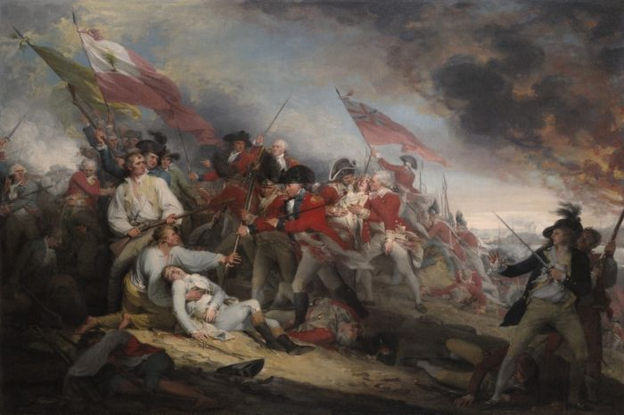

Stephen Tufts Jr. was born at Malden on March 28, 1749, the eldest son of Stephen Tufts, schoolmaster, and Katherine (Taylor) Tufts. He owned the mill privileges on Spot Pond Brook and lived in the old Tufts house on the bank of the Malden River. He served as a private at the Lexington alarm in 1775, in Col. Thomas Gardner’s regiment, and died on March 12, 1832.
Summary drawn from the sources cited on this page.
Biography
Stephen Tufts Jr. was born at Malden on March 28, 1749, the eldest son of Stephen Tufts, schoolmaster, and Katherine (Taylor) Tufts. He owned the mill privileges on Spot Pond Brook and lived in the old Tufts house on the bank of the Malden River. He died at Malden on March 12, 1832 (Tufts Kinsmen, Vol. I, p. 58, no. 21-1).

He turned out as a private at the Lexington alarm in 1775 and served in Col. Thomas Gardner’s regiment. The family record also passes on a tradition. Stephen was known as a marksman, and on the day of Bunker Hill he is said to have rowed down the river, hidden his boat in the bushes on the Charlestown shore behind the British lines, and fired into the flank of the advancing Regulars (Tufts Kinsmen, Vol. I, p. 58).
On Malden’s Revolutionary Tablet

A Stephen Tufts is named on Malden’s tablet to the town’s soldiers and sailors. The DAR also records a Revolutionary grave marker for a Stephen Tufts at Bell Rock Cemetery, Malden, placed by the Mystic Side Chapter (DAR Genealogical Research System, Revolutionary War grave and marker records).
Service Record
Town: Malden, Mass. · Dates: 28 March 1749 – 12 March 1832
Private at the Lexington alarm, 1775; Col. Thomas Gardner’s regiment (Tufts Kinsmen, Vol. I, p. 58).
Family Connection
Parents: Stephen Tufts (1711–1785), schoolmaster, and Katherine (Taylor) Tufts. Brother: Capt. Timothy Tufts (1756–1810). Children: Stephen, John, Stephen, Hannah, Rebecca, Nancy, Simon, Sarah, Mary, and Joseph W. (Tufts Kinsmen, Vol. I, p. 58).
Relatives with profiles on this site: brother Capt. Timothy Tufts (1756–1810); cousin John Tufts of Malden (1739–1799); great-grandfather Peter Tufts the immigrant; also on the Malden tablet: Adam Tufts .
.
Spouse(s)
- Hannah Farrington (1754–1820), daughter of John and Hannah (Hawkes) Farrington; married June 10, 1773, at Malden (Tufts Kinsmen, Vol. I, p. 58).
Authoritative IDs / Index Numbers
| Source | ID / status |
|---|---|
| Perseus person index (auth=) | Note: Pending further work. |
| Find a Grave memorial | Note: Pending further work. |
| Brooks, History of Medford (1855) register no. | Note: Pending further work. |
| Tufts Kinsmen, Vol. I family no. | 21-1 |
| Mass. Soldiers and Sailors | Not yet checked for this page |
| DAR ancestor no. | Note: Pending further work. |
| FamilySearch ID | Note: Pending further work. |
| Geni profile | Note: Pending further work. |
| WikiTree ID | Note: Pending further work. |
| Town / vital records | Medford VRs not yet checked by volume and page |
Only IDs confirmed against dates and family are given as matches. “Not yet checked” means the source has not been searched; “Checked, not found” means it was searched without a match.
⚑ Unverified
Bunker Hill: his shooting from the Charlestown shore is family tradition, with no muster roll or other record. Which Stephen the Malden tablet and the Bell Rock marker honor is not stated; his father, the schoolmaster (d. 1785), is buried at Malden too. Note: Pending further work.
Links and Resources
Every source, record, map, survey, marker and artifact tied to this person, gathered in one place. Page numbers are given where a book is cited.